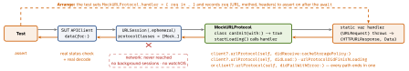
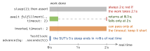

testing · folio
In one line: Wait for the event, never for time. async code: an
async throws test that awaits. Callbacks: XCTestExpectation +
await fulfillment(of:), or Swift Testing’s confirmation (which does not wait) or a
continuation. Network: the real URLSession over a stub URLProtocol. Time: inject
a Clock or scheduler and advance it.
Download PDF Print view LaTeX source


Pick the wait
| need | XCTest | Swift Testing |
|---|---|---|
async API | func test() async throws — arbitrary actor; sync tests run on the main actor | @Test func f() async throws — always an arbitrary task |
| callback, N times | expectation(description:), expectedFulfillmentCount = N, await fulfillment(of: [e], timeout: 2) | await confirmation(expectedCount: N) { c in … c() } — all N before the closure returns |
| at least N | assertForOverFulfill = false | expectedCount: N... (6.1) |
| must not happen | isInverted = true: fails at once if fulfilled | expectedCount: 0 |
| throws | XCTAssertThrowsError takes a sync autoclosure → do { try await … } catch | await #expect(throws: E.self) { try await … } returns the error (6.1) |
| hang guard | executionTimeAllowance: 600 s default, rounded up to whole minutes, only with test timeouts on | .timeLimit(.minutes(n)): minutes only; shortest wins; per argument case |
| parallel | a class runs its tests one by one | all at once, one process; .serialized orders one suite only |
Expectations, precisely
wait(for:timeout:)is unavailable inasyncfunctions since Xcode 14.3 (it can deadlock):await fulfillment(of:timeout:). Left out, the timeout is.infinity— onlyexecutionTimeAllowancethen ends a hang.- A wait returns the moment all are fulfilled: the timeout is a ceiling.
XCTWaiter.Result:completed·timedOut·incorrectOrder·invertedFulfillment·interrupted. - Over-fulfilling fails only with
assertForOverFulfill:truefrom theXCTestCaseconvenience methods,falsefromXCTestExpectation(description:). - Predicate expectations poll — slow; prefer callback, KVO or notification ones (inject a private
NotificationCenter(), hand it to the expectation). - Swift Testing has no wait: a confirmation neither blocks nor suspends.
XCTestExpectationis unsupported in@Test— even 6.4’s interop (XCTAssertnow counts there) excludes it. Bridge a callback:
try await withCheckedThrowingContinuation { c in
api.fetch(42) { c.resume(with: $0) } }
Resume exactly once: a second resume is afatalError; none leaves the test suspended for ever and logs “leaked its continuation”.
What each wait costs

Network tests in layers
On a device: Xcode’s Device Conditions (Xcode 11) set a network-link profile (latency, loss, slow DNS) or a thermal state — the Network Link Conditioner, driven by Xcode.
Traps
static var handlerunder Swift Testing: all suites run in parallel in one process, and.serializeddoes not order unrelated suites — two suites overwrite one stub. Key handlers per test (own host or header → table) or nest every network suite in one.serializedparent. Swift 6 mode:nonisolated(unsafe)or a lock.URLProtocol.registerClassis global (consulted in reverse order) — set the session’sprotocolClasses..ephemeralstill keeps caches, cookies in RAM.
The stub
final class MockURLProtocol: URLProtocol {
nonisolated(unsafe) static var handler:
((URLRequest) throws -> (HTTPURLResponse, Data))?
override class func canInit(with r: URLRequest) -> Bool { true }
override class func canonicalRequest(for r: URLRequest)
-> URLRequest { r }
override func startLoading() {
do { let (resp, data) = try Self.handler!(request)
client?.urlProtocol(self, didReceive: resp,
cacheStoragePolicy: .notAllowed)
client?.urlProtocol(self, didLoad: data)
client?.urlProtocolDidFinishLoading(self)
} catch { client?.urlProtocol(self, didFailWithError: error) } }
override func stopLoading() {} }
let config = URLSessionConfiguration.ephemeral
config.protocolClasses = [MockURLProtocol.self]
let sut = APIClient(session: URLSession(configuration: config))
MockURLProtocol.handler = { req in (HTTPURLResponse(url: req.url!,
statusCode: 500, httpVersion: nil, headerFields: nil)!, Data()) }
await #expect(throws: APIError.status(500)) {
try await sut.user(id: 42) }Four ways a request fails — stub each
| path | the handler | what the client sees |
|---|---|---|
| transport | throw URLError(.notConnectedToInternet) (−1009) | data(for:) throws that URLError → map to .offline |
| HTTP status | returns 404 / 500 | no throw: (Data, URLResponse) comes back; you cast and check 200...299 |
| decoding | 200 + malformed JSON | DecodingError: keyNotFound · typeMismatch · valueNotFound · dataCorrupted |
| cancelled | never finishes; the test cancels the Task | URLError(.cancelled) (−999), not CancellationError |
Assert the request too. Its body arrives as httpBodyStream; httpBody is often nil inside the protocol.
Time, streams, Combine
- Clock: depend on
any Clock<Duration>(iOS 16);sleep(for:)works on the existential since Swift 5.9. ProdContinuousClock(); tests (swift-clocks)TestClock:await clock.advance(by: .seconds(5)),await clock.run()until nothing sleeps;ImmediateClocknever suspends;UnimplementedClockfails if used. Dates: inject() -> Date. Timers / GCD: a scheduler protocol whose mock fires at once. - Combine: Apple’s
ImmediateSchedulerignores dates but has its own time types, so it cannot replaceDispatchQueuewithout generics; combine-schedulers’AnySchedulerOf<DispatchQueue>+DispatchQueue.test+advance(by:)can. Keep theAnyCancellable(deinit cancels), orfor awaitoverpublisher.values(iOS 15,Failure == Never). - AsyncStream: drive the SUT through
AsyncStream.makeStream(of:)(5.9) — the test holds the continuation. Consume bounded:s.prefix(3)orfinish(); an unfinished stream never ends thefor await.
Ordering & cancellation
Task { await vm.load() }then assert: the next line usually runs before the task body. Awaittask.value, callawait vm.load()directly, or useTask.immediate(6.2: synchronous up to its first suspension).withMainSerialExecutor(swift-concurrency-extras) serialises a test’s tasks — tests only, flips a global.CancellationErroris promised byTask.checkCancellation()andTask.sleep, not by every API (URLSession:URLError). Assert the outcome and the side effect that must not happen. Swift Testing: aCancellationErrorin a cancelled test = cancelled, not failed;Test.cancel()(6.3).- Cleanup (6.4):
defer { await … }runs to completion;withTaskCancellationShieldhides cancellation from it (no back-deployment).